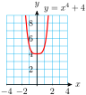

So far most of your work in mathematics has been done using the set of real numbers. We often represent the real numbers by a number line, because they can be matched up one-for-one with the points on the line. Every real number is either rational or irrational, and can be expressed as a decimal number, although irrational numbers are non-repeating, non-terminating decimals. However, the real numbers are actually a subset of a larger set of numbers called the complex numbers.
You may have first encountered complex numbers as solutions of certain quadratic equations. For example, the graph of
\begin{equation*}
f(x)=x^2-2x+2
\end{equation*}
has no \(x\)-intercepts (as shown at right), because the equation \(~~x^2-2x+2-0~~\) has no real-valued solutions.
Applying the quadratic formula, we find
\begin{equation*}
x=\dfrac{-(-2) \pm \sqrt{(-2)^2-4(1)(2)}}{2} = \dfrac{2 \pm \sqrt{-4}}{2}
\end{equation*}
The solutions of the equation are \(\dfrac{2 + \sqrt{-4}}{2}\) and \(\dfrac{2 - \sqrt{-4}}{2}\text{,}\) but they are not real numbers. Because \(\sqrt{-4}\) is not a real number, the equation \(x^2-2x+2-0\) has no real solutions.
Subsection Imaginary Numbers
Although square roots of negative numbers such as \(\sqrt{-4}\) are not real numbers, they occur often in mathematics and its applications. Mathematicians began working with square roots of negative numbers in the sixteenth century, in their attempts to solve quadratic and cubic equations. René Descartes gave them the name imaginary numbers, which reflected the mistrust with which mathematicians regarded them at the time. Today, however, such numbers are well understood and used routinely by scientists and engineers.
We begin by defining a new number, called \(i\), whose square is \(-1\text{.}\)
Imaginary Unit.
We define the imaginary unit, \(i\), by
\begin{equation*}
\blert{i^2=-1}~~~~~~\text{or}~~~~~~\blert{i=\sqrt{-1}}
\end{equation*}
The letter \(i\) used in this way is not a variable, it is the name of a specific number, and hence is a constant. The square root of any negative number can be written as the product of a real number and \(i\). For example,
\begin{align*}
\sqrt{-4} \amp = \sqrt{-1 \cdot 4}\\
\amp = \sqrt{-1} \sqrt{4} = i \cdot 2
\end{align*}
or \(\sqrt{-4} = 2i\text{.}\) Any number that is the product of \(i\) and a real number is called an imaginary number.
Imaginary Numbers.
For any real number \(a \gt 0\text{,}\)
\begin{equation*}
\blert{\sqrt{-a} = \sqrt{-1}\sqrt{a} = i\sqrt{a}}
\end{equation*}
Examples of imaginary numbers are \(3i,~ \dfrac{7}{8}i,~ -38i,\) and \(i\sqrt{5}\text{.}\)
Example 10.32.
Write each radical as an imaginary number.
\(\displaystyle \sqrt{-25}\)
\(\displaystyle 2\sqrt{-3}\)
Solution.
\(\displaystyle \sqrt{-25} = \sqrt{-1}\sqrt{25} = i\sqrt{25} = 5i\)
\(\displaystyle 2\sqrt{-3} = \sqrt{-1}\sqrt{3} = 2i\sqrt{3}\)
Checkpoint 10.33.
Write each radical as an imaginary number.
\(\displaystyle \sqrt{-18}\)
\(\displaystyle -6\sqrt{-5}\)
Answer.
\(\displaystyle 3i\sqrt{2}\)
\(\displaystyle -6i\sqrt{5}\)
Just as each positive number has two real-valued square roots, every negative number has two imaginary square roots. For example, the two square roots of \(-9\) are \(3i\) and \(-3i\text{.}\)
Subsection Complex Numbers
Consider the quadratic equation
\begin{equation*}
x^2 - 2x + 5 = 0
\end{equation*}
Using the quadratic formula to solve the equation, we find
\begin{equation*}
x=\dfrac{-(-2) \pm \sqrt{(-2)^2-4(1)(5)}}{2} = \dfrac{2 \pm \sqrt{-16}}{2}
\end{equation*}
If we now replace \(\sqrt{-16}\) by \(4i\text{,}\) we have
\begin{equation*}
x = \dfrac{2 \pm 4i}{2} = 1 \pm 2i
\end{equation*}
The two solutions are \(1 + 2i\) and \(1 - 2i\text{.}\) These are examples of complex numbers.
Complex Numbers.
A complex number can be written in the form
\begin{equation*}
\blert{ z=a+bi}
\end{equation*}
where \(a\) and \(b\) are real numbers.
Examples of complex numbers are
\begin{equation*}
3-5i,~ 2+\sqrt{7}i,~ \dfrac{4-i}{3},~ 6i,~~\text{and} ~~ -9
\end{equation*}
In a complex number \(a+bi\text{,}\) \(a\) is called the real part, and \(b\) is called the imaginary part. All real numbers are also complex numbers (with imaginary part equal to zero). A complex number whose real part equals 0 is called a pure imaginary number.
The real and imaginary parts of a complex number cannot be combined. Thus, two complex numbers \(z_1\) and \(z_2\) are equal if and only if their real parts are equal and their imaginary parts are equal.
Equality of Complex Numbers.
Two complex numbers \(z_1 = a + bi\) and \(z_2 = c + di\) are equal if and only if
\begin{equation*}
a = c ~~ \text{and} ~~ c = d
\end{equation*}
Example 10.34.
The solutions of the equation \(x^2-2x+2=0\) are \(\dfrac{2 \pm \sqrt{-4}}{2}\text{.}\) Write these solutions as complex numbers, and simplify.
Solution.
Because \(\sqrt{-4} = \sqrt{-1}\sqrt{4} = 2i,\) we have \(\dfrac{2 \pm \sqrt{-4}}{2} = \dfrac{2 \pm 2i}{2}\text{,}\) or \(1 \pm i\text{.}\) The solutions are \(1+i\) and \(1-i\text{.}\)
Checkpoint 10.35.
Use extraction of roots to solve \((2x+1)^2 + 9 = 0\text{.}\) Write your answers as complex numbers.
Answer.
\(x=\dfrac{-1}{2}\pm\dfrac{3}{2}i\)
Subsection Products of Complex Numbers
To find the product of two imaginary numbers, we use the fact that \(i^2=-1\text{.}\) For example,
\begin{align*}
(3i)(4i)\amp= 3 \cdot 4i^2\\
\amp=12(-1)=-12
\end{align*}
To find the product of two complex numbers, we use the distributive law, as if the numbers were binomials.
Example 10.38.
Multiply \((2+3i)(3-5i)\text{.}\)
Solution.
We multiply each term of the first complex number by each term of the second one.
\begin{equation*}
(2+3i)(3-5i)=6-10i+9i-15i^2
\end{equation*}
Because \(i^2=-1\text{,}\) the last term, \(-15i^2\text{,}\) can be replaced by \(-15(-1)\text{,}\) or \(15\text{,}\) to obtain
\begin{equation*}
6-10i+9i+15
\end{equation*}
Finally, we combine the real parts and imaginary parts to obtain
\begin{equation*}
(6+15)+(-10i+9i) = 21-i
\end{equation*}
Checkpoint 10.39.
Multiply \((-3+2i)(-3-2i)\text{.}\)
In the Homework Probems, you will verify that the following rule holds.
Product of Complex Numbers.
The product of two complex numbers \(z_1=a+bi\) and \(z_2=c+di\) is
\begin{equation*}
\blert{z_1z_2=(a+bi)(c+di) = (ac-bd)+(ad+bc)i}
\end{equation*}
Subsection Quotients of Complex Numbers
To find the quotient of two complex numbers, we use the technique of rationalizing the denominator. First consider division by a pure imaginary number.
Example 10.41.
Divide \(\dfrac{3+4i}{2i}\text{.}\)
Solution.
Because \(i\) is really a radical (remember that \(i=\sqrt{-1}\)), we multiply the numerator and denominator of the quotient by \(i\) to obtain
\begin{align*}
\dfrac{(3+4i) \cdot i}{2i \cdot i}\amp= \dfrac{3i+4i^2}{2i^2} \amp \amp \blert{\text{Apply the distributive law.}}\\
\amp=\dfrac{3i-4}{-2} \amp \amp \blert{\text{Recall that } i^2=-1.}
\end{align*}
To write the quotient in the form \(a+bi\text{,}\) we divide \(-2\) into each term of the numerator.
\begin{equation*}
\dfrac{3i}{-2} - \dfrac{4}{-2} = \dfrac{-3}{2}i +2
\end{equation*}
The quotient is \(2 - \dfrac{3}{2} i\text{.}\)
Checkpoint 10.42.
Divide \(\dfrac{8+9i}{3i}\text{.}\)
Perhaps you recall that to rationalize a binomial denominator, we multiply by its conjugate. For example, to rationalize the denominator of \(\dfrac{5}{2+\sqrt{3}}\text{,}\) we multiply numerator and denominator by \(2-\sqrt{3}\text{.}\) A similar technique works for dividing complex numbers. We first define the conjugate of a complex number.
Definition 10.43. Complex Conjugate.
For any complex number \(z=a+bi\text{,}\) the number
\begin{equation*}
\blert{\bar{z} = a-bi}
\end{equation*}
is called the complex conjugate of \(z\text{.}\)
To illustrate, we calculate the quotient \(\dfrac{5}{2+3i}\text{.}\) We multiply numerator and denominator by the complex conjugate of the denominator, \(2-3i\text{,}\) to obtain
\begin{equation*}
\dfrac{5}{2+3i} \cdot \dfrac{2-3i}{2-3i}
\end{equation*}
The denominator is then a real number, because
\begin{equation*}
(2+3i)(2-3i) = 4-6i+6i-9i^2 = 4+9 = 13
\end{equation*}
and the quotient is
\begin{equation*}
\dfrac{5}{2+3i} \cdot \dfrac{2-3i}{2-3i}=\dfrac{10-15i}{13} = \dfrac{10}{13} - \dfrac{15}{13}i
\end{equation*}
Example 10.45.
Divide \(\dfrac{2+3i}{4-2i}\text{.}\)
Solution.
We multiply numerator and denominator by \(4+2i\text{,}\) the complex conjugate of the denominator.
\begin{align*}
\dfrac{2+3i}{4-2i} \amp =\dfrac{(2+3i)\alert{(4+2i)}}{(4-2i)\alert{(4+2i)}} \amp \amp\
\begin{array}{l}
\blert{\text{Expand numerator }}\\
\quad\blert{\text{and denominator.}}
\end{array}\\
\amp = \dfrac{8+4i+12i+6i^2}{16+8i-8i-4i^2} \amp \amp \blert{\text{ Replace }~ i^2~ \text{by}~ {-1}.}\\
\amp = \dfrac{8+16i-6}{16-(-4)} \amp \amp \blert{\text{ Combine like terms.}}\\
\amp = \dfrac{2+16i}{20} \amp \amp\
\begin{array}{l}
\blert{\text{Divide 20 into each term}}\\
\quad\blert{\text{ of numerator.}}
\end{array}\\
\amp = \dfrac{2}{20} + \dfrac{16i}{20} = \dfrac{1}{10} + \dfrac{4}{5}i
\end{align*}
Checkpoint 10.46.
Write the quotient \(\dfrac{4-2i}{1+i}\) in the form \(a+bi\text{.}\)
In the Homework Problems you will verify the rule for dividing complex numbers.
Quotient of Complex Numbers.
The quotient of two complex numbers \(z_1=a+bi\) and \(z_2=c+di\) is
\begin{equation*}
\blert{\dfrac{z_1}{z_2} = \dfrac{a+bi}{c+di} = \dfrac{a+bi}{c+di} \cdot \dfrac{c-di}{c-di} = \dfrac{ac+bd}{c^2+d^2} + \dfrac{bc-ad}{c^2+d^2}i}
\end{equation*}
Subsection Graphing Complex Numbers
Real numbers can be plotted on a number line, but to graph a complex number we use a plane, called the complex plane. In the complex plane, the real numbers lie on the horizontal or real axis, and pure imaginary numbers lie on the vertical or imaginary axis. To plot a complex number \(a+bi\) we move \(a\) units from the origin in the horizontal direction and \(b\) units in the vertical direction.
Example 10.47.
Plot the numbers \(z=2+3i\) and \(\bar{z}=2-3i\) in the complex plane.
Solution.
To plot \(z=2+3i\text{,}\) we move from the origin 2 units to the right and 3 units up. To plot \(\bar{z}=2-3i\) we move from the origin 2 units to the right and 3 units down. The numbers \(2+3i\) and \(2-3i\) are plotted in the figure at right.
Checkpoint 10.48.
Plot \(z=-3+5i\) and its conjugate in the complex plane.
The modulus, or length, of a complex number is its distance from the origin in the complex plane. The modulus of a complex number is analogous to the absolute value of a real number, and is denoted by \(\abs{z}\text{.}\) If \(z=a+bi\text{,}\) we can use the Pythagorean theorem to compute its modulus.
Modulus of a Complex Number.
The modulus of a complex number \(z=a+bi\) is given by
\begin{equation*}
\blert{\abs{z}=\sqrt{a^2+b^2}}
\end{equation*}
For example, the modulus of \(z=2+3i\) is
\begin{equation*}
\abs{z}=\sqrt{2^2+3^2}=\sqrt{13}
\end{equation*}
Example 10.50.
Plot all points in the complex plane that satisfy the equation \(\abs{z}=4\text{.}\)
Solution.
The points that satisfy \(\abs{z}=4\) all lie at a distance of 4 units from the origin. In other words, they lie on a circle of radius 4 centered at the origin, as shown at right.
Checkpoint 10.51.
Write an equation for the circle of radius 1 centered at the origin in the complex plane.
We can think of the graph of a complex number \(z=a+bi\) as the vector (or arrow) that starts at the origin and ends at the point \((a,b)\) in the complex plane, as shown in figure (a).
Then the sum of two complex numbers corresponds to the sum of the two vectors representing them. Figure (b) illustrates the sum of two complex numbers, \(z_1\) and \(z_2\text{,}\) by vector addition using the parallelogram law: we form a parallelogram with the vectors \(z_1\) and \(z_2\) and as adjacent sides. Their sum is the vector that forms the diagonal of the parallelogram, starting at the origin.
Example 10.52.
Illustrate the sum of \(z_1=5-i\) and \(z_2=-7+4i\) by vector addition.
Solution.
Draw a vector starting at the origin and ending at the point \((5,-1)\) in the complex plane to represent \(z_1\text{,}\) and another vector ending at \((-7,4)\) to represent \(z_2\text{.}\) Now sketch the opposite sides of a parallelogram, and draw the diagonal starting at the origin, as shown at right.
This vector represents the sum \(z_1+z_2\text{.}\) You can check that the vector ends at the point
\begin{equation*}
z_1+z_2=(5-7)+(-1+4)i=-2+3i
\end{equation*}
To visualize subtraction, we add the opposite of the second vector, because
\begin{equation*}
z_1-z_2=z_1+(-z_2)
\end{equation*}
Recall that the opposite of a vector has the same length, but it points in the opposite direction.
Checkpoint 10.53.
Illustrate \(z_1-z_2\text{,}\) for \(z_1=3-2i\) and \(z_2=-4+5i\text{.}\)
Subsection Zeros of Polynomials
A polynomial with real-number coefficients may or may not have real-valued zeros. For example, the polynomial \(x^4+4\) has no real-valued zeros. But a polynomial always has a zero if we allow complex numbers as inputs. Because we can add, subtract, and multiply any two complex numbers, we can evaluate a polynomial function at a complex number. Thus, we can extend the domain of any polynomial to include all complex numbers.
Example 10.54.
Evaluate the polynomial \(f(x)=x^2-2x+2\) for \(x=1+i\text{,}\) and simplify.
Solution.
We substitute \(x=1+i\text{,}\) to find
\begin{align*}
f(1+i) \amp =(1+i)^2 - 2(1+i) +2\\
\amp = 1^2+2i+i^2-2-2i+2\\
\amp = 1+2i+(-1)-2-2i+2
\end{align*}
Thus, \(f(1+i)=0\text{,}\) so \(1+i\) is a zero of the polynomial.
Checkpoint 10.55.
If \(f(x)=x^2-6x+13\text{,}\) evaluate \(f(3+2i)\text{.}\)
The zeros of a quadratic polynomial \(~ax^2+bx+c~\text{,}\) of course, are the solutions of the quadratic equation \(~ax^2+bx+c=0~,\) and those solutions are given by the quadratic formula,
\begin{equation*}
x=\dfrac{-b}{2a} + \dfrac{b^2-4ac}{2a}~~~\text{and}~~~x=\dfrac{-b}{2a} - \dfrac{b^2-4ac}{2a}
\end{equation*}
If the discriminant \(~D=b^2-4ac~\) is negative, the two solutions are complex conjugates. For example, the solutions of the equation \(~x^2-4x+5=0~\) are
\begin{equation*}
\dfrac{-(-4)\pm \sqrt{(-4)^2-4(1)(5)}}{2(1)} = \dfrac{4 \pm \sqrt{-4}}{2}
\end{equation*}
or \(z=2+i\) and \(\bar{z}=2-i\text{.}\) Thus, if we know that \(z=a+bi\) is one complex solution of a quadratic equation, we know that \(\bar{z}=a-bi\) is the other solution.
We can now write a quadratic polynomial, with real coefficients, having any complex number as one of its zeros. The factored form of the quadratic polynomial with zeros \(z\) and \(\bar{z}\) is
\begin{equation*}
p(x)=(x-z)(x-\bar{z})
\end{equation*}
Expanding the right side, we find
\begin{equation*}
p(x)=x^2 - (z+\bar{z})x+z\bar{z}
\end{equation*}
Because \((z+\bar{z})\) and \(z\bar{z}\) are both real numbers, this polynomial has real-valued coefficients.
Complex Zeros of a Quadratic Polynomial.
If \(z=a+bi,~b \not= 0\text{,}\) is a complex zero of a quadratic polynomial \(p(x)\) with real coefficients and lead coefficient 1, then \(\bar{z}=a-bi\) is the other zero, and
\begin{equation*}
\blert{p(x)=(x-z)(x-\bar{z})=x^2 - (z+\bar{z})x+z\bar{z}}
\end{equation*}
Example 10.56.
Let \(z=7-5i\text{.}\) Compute \((z+\bar{z})\) and \(z\bar{z}\text{.}\)
Find a quadratic polynomial with one zero being \(z=7-5i\text{.}\)
Solution.
The conjugate of
\(z=7-5i\) is
\(\bar{z}=7+5i\text{,}\) so
\begin{equation*}
(z+\bar{z})=(7-5i)+(7+5i) = 14
\end{equation*}
and
\begin{align*}
z\bar{z} \amp =(7-5i)(7+5i)\\
\amp =49-25i^2 = 49+25=74
\end{align*}
The polynomial is
\begin{align*}
p(x) \amp =x^2 + (z+\bar{z})x+z\bar{z}\\
\amp =x^2-14x+74
\end{align*}
Checkpoint 10.57.
Let \(z=-3+4i\text{.}\) Compute \((z+\bar{z})\) and \(z\bar{z}\text{.}\)
Find a quadratic polynomial with one zero being \(z=-3+4i\text{.}\)
Answer.
\(z+\bar{z}=-6\text{,}\) \(~z\bar{z}=25\)
\(\displaystyle x^2+6x+25=0\)
One of the most important results in mathematics is the fundamental theorem of algebra, which says that if we allow complex numbers as inputs, then every polynomial \(p(x)\) of degree \(n \ge 1\) has exactly \(n\) complex number zeros.
Fundamental Theorem of Algebra.
Let \(p(x)\) be a polynomial of degree \(n \ge 1\text{.}\) Then \(p(x)\) has exactly \(n\) complex zeros, counting multiplicities.
As a result, every polynomial of degree can be factored as the product of linear terms.
For example, although the graph of \(~~y=x^4+4~~\)shown at right has no \(x\)-intercepts, the fundamental theorem tells us that there are four complex solutions to \(~x^4+4=0~\text{,}\) and that \(x^4+4\) can be factored. You can check that the four solutions to \(~x^4+4=0~\) are
\begin{equation*}
1+i,~-1+i,~-1-i,~\text{and}~ 1-i
\end{equation*}

For example, if \(x=1+i\text{,}\) then
\begin{equation*}
x^2=(1+i)^2=1+2i+i^2=2i
\end{equation*}
and
\begin{equation*}
x^4=(x^2)^2=(2i)^2=-4
\end{equation*}
Because each zero corresponds to a factor of the polynomial, the factored form of \(x^4+4\) is
\begin{equation*}
x^4+4=\left[x-(1+i)][x-(-1+i)\right]\left[x-(-1-i)\right]\left[x-(1-i)\right]
\end{equation*}
The four solutions to \(~x^4+4=0~\) form two complex conjugate pairs, namely \(1 \pm i\) and \(-1 \pm i\text{.}\) We see again that, for every polynomial with real coefficients, the nonreal zeros always occur in complex conjugate pairs.
Example 10.59.
Find a fourth degree polynomial with real coefficients, two of whose zeros are \(3i\) and \(2+i\text{.}\)
Solution.
The other two zeros are \(-3i\) and \(2-i\text{.}\) The factored form of the polynomial is
\begin{equation*}
(x-3i)(x+3i)[x-(2+i)][x-(2-i)]
\end{equation*}
We multiply together the factors to find the polynomial. The product of \((x-3i)(x+3i)\) is \(x^2+9\text{,}\) and
\begin{align*}
[x-(2+i)][x-(2-i)] \amp =x^2-(2+i+2-i)x+(2+i)(2-i)\\
\amp = x^2-4x+5
\end{align*}
Finally, we multiply these two partial products to find the polynomial we seek,
\begin{equation*}
(x^2+9)(x^2-4x+5)=x^4-4x^3+14x^2-36x+45
\end{equation*}
Checkpoint 10.60.
Find the zeros of the polynomial \(x^4+15x^2-16\text{.}\)
Write the polynomial in factored form.
Answer.
\(\displaystyle \pm 1,~\pm 4i\)
\(\displaystyle (x-1)(x+1)(x-4i)(x+4i)\)
Review the following skills you will need for this section.
Algebra Refresher 10.3.
\(\displaystyle 3x^2=6x\)
\(\displaystyle 16x^2=9\)
\(\displaystyle x^2+4x=12\)
\(\displaystyle 2(x-3)^2=8\)
\(\displaystyle 3x^2-8=10x\)
\(\displaystyle x^2-3x+1=0\)
\(\underline{\qquad\qquad\qquad\qquad}\)
Algebra Refresher Answers
\(\displaystyle 0,~2\)
\(\displaystyle \dfrac{\pm 3}{4}\)
\(\displaystyle -6,~2\)
\(\displaystyle 1,~5\)
\(\displaystyle \dfrac{-2}{3},~4\)
\(\displaystyle \dfrac{3 \pm \sqrt{5}}{2}\)